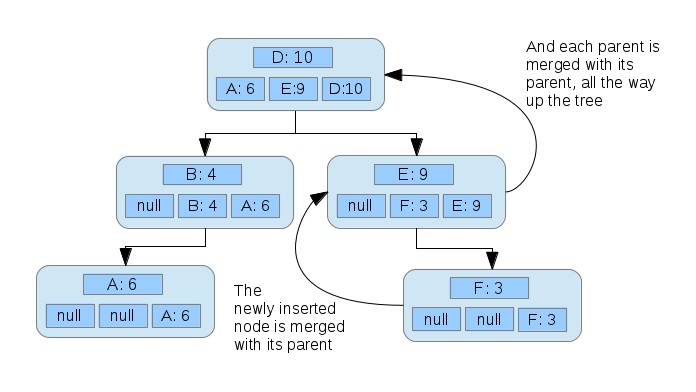
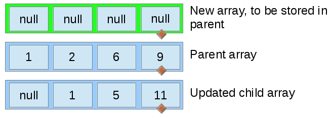
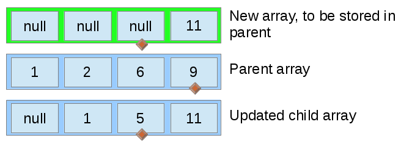

Recently, I came across a problem in which I had to store contacts in an instant message application. I needed to be able to display the list of contacts to the user in alphabetical order, and I needed to be able to retrieve a contact object quickly. One data structure that accomplishes all this is a simple binary tree -- an in-order traversal of the tree will produce the list of contacts in alphabetical order, and a balanced binary tree provides ")
However, I also needed to be able to query the 
")
To solve this problem, I created an augmented binary tree which provides an insertion time of ")
")
")
In order to accomplish this, each node is augmented with an array of size
When a node 

Pictures are great. Consider a tree with one node, for a contact Dave who has been contacted 10 times.
{kind=link}
Then, we add another node for Betsy, who has been contacted 4 times.
{kind=link}
The array stored in the node representing Betsy gets merged with the parent node, Dave. Inserting another node:
{kind=link}
Once again, new nodes start out with only themselves in their array, and arrays are merged upwards from the node inserted.
{kind=link}
Another node:

{kind=link}
From here, fetching the
Note that in order to maintain
In case the similarity to merge sort is not clear, here is some pseudo-code for the merging:
function merge(ParentArray a, ChildArray b) {
int myPos = a.size - 1;
int theirPos = b.size - 1;
Entry[] newObjs = new Entry[];
for (int i = size - 1; i >= 0; i--) {
if (a[myPos] > b[theirPos]) {
newObjs[i] = a[myPos];
myPos--;
} else if (a[myPos] == b[theirPos]) {
newObjs[i] = a[myPos];
myPos--;
theirPos--;
} else {
newObjs[i] = b[theirPos];
theirPos--;
}
}
}
This process, ran on arrays of size 5, is depicted below. Initially, the new array is empty.

{kind=link}
The largest value from both the parent's old array and the child's array are selected on each iteration, ensuring that the new array is properly ordered.

{kind=link}
Note that the pointer variable (represented by the diamond) moves every time for the top array, but only moves for one of the bottom arrays or the other, except in the case where both bottom arrays have an equal value.
{kind=link}
In each iteration, the value to be placed in the top array at the diamond is determined in constant time by simply picking the larger of the two values pointed to in the lower arrays. This means that the merge operation runs in ")
{kind=link}
Unlike in a traditional merge sort, the merge process can be halted when the top array is full, because we only care about the largest
{kind=link}
While the TopNTree provides, in my opinion, a clean solution to this particular problem, there are other possible solutions. The first thing I thought of was to simply maintain a tree of contacts sorted by name and a heap of the contacts sorted by how frequently they are contacted. In the case where the most frequently contacted contacts only needs to be calculated once, this might save some time, but if a contact's frequency must be updated (a common event in a communication application), one would have to iterate over the entire heap. The following table shows the differences in upper bounds for different techniques. Note that in all cases 


| Method | Insert | Search | Getting most contacted | Update |
|---|---|---|---|---|
| TopNTree | |
|
|
|
| Tree and heap | |
|
|
") |
| Tree | |
|
|
|
| Heap | |
|
|
|
For me, the search time of the heap and the "getting most contacted" time of the tree made those solutions impractical, so I compared the TopNTree to a tree and a heap. Since the size of
Because big-O analysis, in general, is not to be trusted, I created a synthetic benchmark that emphasized the operations I was concerned with. The results are graphed below.
Obviously, no synthetic beats real-world testing. I hope the TopNTree performs well!
Reddit user JustSomeBadAdvice points out that using a heap and a tree where the nodes of each are the same (or contain pointers to each other) would produce similar, and possibly faster times, with the cost of more space.